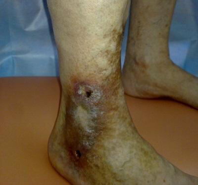

Celebrul blogger aproape a murit din cauza varicelor
Anna Stone, un cunoscut blogger IG, aproape a murit din cauza varicelor
obişnuiţi. Femeia, în loc să facă ceva cu venele ei varicoase, doar l-a
ignorat.
Ea, la fel ca toți bloggerii de frumusețe, se preocupa de aspectul ei, iar boala
mortală - varicele, Anna a considerat problemă frivolă. Aşa a continuat până
când femeia a fost dusă la spital.
Anna în spital
Nu mi-a fost frică și chiar m-am obişnuit să trăiesc cu vene
varicoase. Nu puteam purta ceea ce voiam cu adevărat să port, mă ruşinam pe plajă de
venele mele negre. Și când mă dureau picioarele, iar asta se întâmpla
foarte des, refuzam invitațiile prietenilor și mă duceam acasă, în loc să mă
relaxez și să mă distrez la o petrecere.
Această atitudine duce la faptul că oamenii mor din cauza venelor varicoase
Experții nu încetează să repete un adevăr simplu că varicele de
la sine nu vor dispărea nicăieri, că varicele - boală mortală care provoacă moartea
multor mii de oameni din întreaga lume. Ce la primele semne ale acestei
afecțiuni, trebuie să începeți lupta cu varicele.
Iar cei care au o predispoziție genetică ar trebui să facă tot posibilul
pentru a preveni venele varicoase.
Primele semne ale venelor varicoase: greutate în picioare,
umflare, furnicături și mâncărime, oboseală rapidă a picioarelor și durere.
Varice - cheaguri de sânge, ulcere trofice, moarte neașteptată și
dureroasă

Ulcer trofic cauzat de vene varicoase
Varice avansate
Varicele duc la formarea cheagurilor de sânge în vase, care pot în
orice moment să se desprindă, să ajungă la plămâni și să blocheze artera
pulmonară și chiar să provoace un atac de cord dacă un astfel de cheag de sânge
ajunge la inimă.
Varice avansate
Varicele - un pericol invizibil zilnic
Aveți varice sau nu, puteți determina cu ușurință prin acest test
Verificați-vă dacă aveţi vene varicoase
1. Trebuie să renunţați la planuri din
cauza durerii în picioare?
2. Purtați adesea pantofi cu toc înalt?
3. Prezența semnelor de vene varicoase
la părinții dumneavoastră
4. Prezența unei rețele venoase pe
picioare, întunecarea venelor
5. Verificaţi prezența semnelor
invizibile ale venelor varicoase
Durere în picioare la mersul pe jos
Crampe nocturne
Mâncărime
Umflarea picioarelor
Senzație de greutate în picioare
Furnicături în picioare
6. Cât de repede vă obosesc
picioarele când mergeți?
7. Prezența durerii în picioare
după o zi de lucru?
Rezultat:
Atenție! Rezultatul dvs. sugerează că ar trebui să
aveți grijă de sănătatea picioarelor cât mai curând posibil și să
începeți să luptați împotriva venelor varicoase. Acesta este singurul
mod în care vă puteți proteja sănătatea, puteți preveni problemele grave și
periculoase legate cu varicele.
Rezultat:
Atenție! Rezultatul dvs. sugerează că ar trebui să
aveți grijă de sănătatea picioarelor cât mai curând posibil și să
începeți să luptați împotriva venelor varicoase. Acesta este singurul
mod în care vă puteți proteja sănătatea, puteți preveni problemele grave și
periculoase legate cu varicele.
Cum să combatem varicele?
Bloggerul Anna Stone a apelat la specialiști numai atunci, când
picioarele ei au început să doară constant. Așa că se mişca prin casă, plângând
de durere.
Durerea era groaznică, iar picioarele îmi tremurau. Îmi părea că ard! Nu puteam să mă dau jos din pat, plângeam și țipam de durere. Nu știam că varicele pot aduce la asta!
Când fata s-a adresat la specialiști, ea a primit un picurare și i-au
sfătuit să administreze analgezice. Durerea a plecat, dar din cauza caracteristicilor
corpului Annei, i-au apărut efecte secundare. A început să aibă probleme cu stomacul.
Toate acestea au provocat varicele, la care Anna nu a acordat prea multă atenție.
Cu timpul, durerea a dispărut, dar experții spun că se va întoarce, deoarece varicele au devenit deja cronice.
La început, Anna a vrut să fie operată, dar, aflând despre contraindicații și perioada de reabilitare, a refuzat imediat această idee.
Consecința și recuperarea după operație - o perioadă lungă și dureroasă
Anna a vrut să găsească un remediu modern și sigur care va ajuta la înfrângerea
venelor varicoase.
În același timp, în clinică, ea a dat peste un interviu cu un
expert care a luptat împotriva venelor varicoase timp de jumătate din viață, expertul
a vorbit despre un nou instrument care va revoluționa lupta împotriva
varicelor.
Angela Bushar, expert în varice
"Majoritatea remediilor au un accent îngust: ameliorează durerea,
calmează mâncărimea, ajută de edem. Această abordare nu este eficientă,
deoarece venele varicoase necesită tratament complex. Anume aşa efect are . Acest gel ajută la activarea
circulației sângelui în picioare, la scurgerea sângelui
stagnat în vene. Și când țesuturile primesc din nou toate
substanțele nutritive, atunci dispar crampele, edemul, plasa venoasă,
durerea și senzația de greutate în picioare."
Remediul are o compoziție excelentă care este bazat pe un complex de extracte de plante,
care sunt bine cunoscute pentru efectul lor de recuperare de varice.
Anna recitea articolul din nou și din nou, apoi a găsit producătorul acestui produs și a
comandat două cutii. A primit gelul peste trei zile și a început să-l aplice în
aceeași zi. În acelaşi timp a aruncat pantofii frumoși, dar incomozi, făcea masaj
anti-varicos.
Picioarele Annei după 1 curs de
Produsul m-a ajutat! Am reușit să scap nu numai de plasa venoasă, ci și să uit de
semnele invizibile ale venelor varicoase.
Umflarea, durerea, mâncărimea și oboseala au dispărut din viața mea!
Nu mai puteam fi timidă de picioarele mele, puteam să alerg cât
doream și să merg ore întregi. Am reușit chiar să mă apuc din nou de dansuri,
la care a trebuit să renunț când am început să am vene varicoase
După ce a scăpat de varice, viața femeii și fotografiile ei în IG au devenit mai
frumoase, ea putea măsura și face poze în acele haine pe care ea însăși și le
dorea, fără teamă că cineva ar fi jenat de aspectul picioarelor ei.
Putea să facă plimbări lungi, să alerge și chiar să danseze
Anna a spus că gelul are o serie de avantaje
importante față de alte remedii pentru vene varicoase:
- Confortabil Se absoarbe repede, nu este gras, are
miros neutru
- Efictiv Ajută de durerea picioarelor în câteva
minute
- Cert După doar 1 curs, venele de pe picioare s-au
luminat, iar semnele invizibile ale varicelor au dispărut
Varicele sunt periculoase și ucid cu adevărat oamenii
Varicele nu trebuie considerate ca o problemă cosmetică. La primul semn al acestei
afecțiuni, trebuie luate măsuri imediat, altfel varicele vor progresa rapid, durerea va
deveni cronică, venele se vor întuneca și vor fi în relief, se vor forma
cheaguri de sânge și vor apărea ulcere trofice care nu se vindecă pe picioare.
Dacă sunteți familiarizat cu varicele nu din auzite, ci din experiența personală, atunci
vă va ajuta să vă întoarceţi frumusețea,
sănătatea și forța picioarelor, așa cum m-a ajutat pe mine
Puteți comanda , completând formularul de
comandă, care este mai simplu, decât în alte magazine.
Completați formularul
Răspundeți la apelul operatorului pentru a clarifica detaliile de livrare
Puteți scăpa de varice, nu-i lăsați nici o singură șansă! Mult noroc!
ATENȚIE! Până la
(inclusiv) pentru produsul de varice este disponibilă reducere de 50% Numărul de
pachete la un preț special este limitat! Aveți timp să comandați ambalajul!
Cutii rămase pentru ziua de azi: 24 de cutii
Condițiile pentru obținerea :
Locuirea pe teritoriul României (în prezent promoția se
aplică numai rezidenților țării)
Vârsta de la 40 de ani (acest lucru va ajuta la furnizarea
gelului celei mai vulnerabile părți a societății)
Un curs într-o mână (un mod de a lupta cu revânzătorii)
Comentarii
Andreea Asachi
Acest gel este o adevărată descoperire pentru mine, care mi-a schimbat
viața. Varicele m-au transformat dintr-o femeie activă într-o gospodină
care stă acasă. Mergeam acasă după locul de muncă în loc de a merge cu
prietenii mei. A fost foarte trist. Situația a schimbat doar . Am trecut cursul și durerea din
picioare a dispărut.
Dalia Dăbuceanu
De asemenea, îmi place acest instrument, este absorbit rapid, nu
pătează hainele.
Lăcrimioara Sâncă
Durerea se ameliorează în câteva minute. Sunt fericită.
Luminiţa Uică
Au mai rămas pachete cu reduceri?
Ionuţ Popa
Da, există încă reducere, tocmai am comandat un pachet pentru soția
mea.
Madalina Gaboş
Am cumpărat un astfel de gel de la un prieten la un preţ mult mai mare, cum
s-a dovedit. Mai bine l-aş comanda singură. Mai mult că formularul este
simplu.
Casian Măruţă
Un remediu bun pentru vene varicoase, pe măsură ce am început să-mi ung
picioarele cu el, am uitat complet de durere.
Sofia Babae
O cunosc! Chiar sunt abonată pentru ea și nu m-ar fi gândit niciodată
că are vene varicoase. Este bine că a scăpat de ele și acum pune fotografii
atât de frumoase și nu numai deasupra taliei.
Dragoş Chiriţă
Soția mea a învins venele varicoase cu acest gel. Un remediu bun.
Petronela Adeleanu
Tocmai am comandat! Reducere mi-au dat!
Ivona Agoş
Și eu, pe măsură ce am scăpat de varice am început a trăi o viață nouă
și chiar am fost promovată, căci doar stăteam așezată și tot mă gândeam
doar la asta, ca să mă întorc acasă și să mă culc în pat, mă
dureau atât de mult picioarele. Iar acum totul este bine.
Agripina Căbuz
ajută. Recomand.
Laurenţiu Văcăreu
Lucrez ca ospătar, picioarele îmi dor teribil spre seară, dar datorită
durerile au dispărut
Draga Vior
O iubesc! Speram să fie cu frumosul Jaime ((((
Mulțumesc! Recenzia dvs. a fost
trimisă pentru moderare.


Comentarii
Andreea Asachi
Acest gel este o adevărată descoperire pentru mine, care mi-a schimbat viața. Varicele m-au transformat dintr-o femeie activă într-o gospodină care stă acasă. Mergeam acasă după locul de muncă în loc de a merge cu prietenii mei. A fost foarte trist. Situația a schimbat doar . Am trecut cursul și durerea din picioare a dispărut.
Dalia Dăbuceanu
De asemenea, îmi place acest instrument, este absorbit rapid, nu pătează hainele.
Lăcrimioara Sâncă
Durerea se ameliorează în câteva minute. Sunt fericită.
Luminiţa Uică
Au mai rămas pachete cu reduceri?
Ionuţ Popa
Da, există încă reducere, tocmai am comandat un pachet pentru soția mea.
Madalina Gaboş
Am cumpărat un astfel de gel de la un prieten la un preţ mult mai mare, cum s-a dovedit. Mai bine l-aş comanda singură. Mai mult că formularul este simplu.
Casian Măruţă
Un remediu bun pentru vene varicoase, pe măsură ce am început să-mi ung picioarele cu el, am uitat complet de durere.
Sofia Babae
O cunosc! Chiar sunt abonată pentru ea și nu m-ar fi gândit niciodată că are vene varicoase. Este bine că a scăpat de ele și acum pune fotografii atât de frumoase și nu numai deasupra taliei.
Dragoş Chiriţă
Soția mea a învins venele varicoase cu acest gel. Un remediu bun.
Petronela Adeleanu
Tocmai am comandat! Reducere mi-au dat!
Ivona Agoş
Și eu, pe măsură ce am scăpat de varice am început a trăi o viață nouă și chiar am fost promovată, căci doar stăteam așezată și tot mă gândeam doar la asta, ca să mă întorc acasă și să mă culc în pat, mă dureau atât de mult picioarele. Iar acum totul este bine.
Agripina Căbuz
ajută. Recomand.
Laurenţiu Văcăreu
Lucrez ca ospătar, picioarele îmi dor teribil spre seară, dar datorită durerile au dispărut
Draga Vior
O iubesc! Speram să fie cu frumosul Jaime ((((